Bullying is repeated, deliberate aggression towards a pupil who cannot easily defend themselves [1]. In this sample two pupils in five report being bullied somewhere (At school, away from school, or online). From this dataset, it can be answered,
| Survey | WHO Global School-Based Student Health Survey (GSHS) - Argentina, 2018 |
|---|---|
| Conducted by | World Health Organization & US Centers for Disease Control and Prevention |
| Accessed via | Kaggle, Bullying in schools [2] · CC0 (public domain) kaggle.com/datasets/leomartinelli/bullying-in-schools |
Variable descriptions:
3 bullying settings (Yes/No) · sex · age band, 8 levels · 3 body-weight flags (Yes/No) · 3 five-level items: loneliness, peer kindness, parental understanding · 3 count bands: attacked, fighting, truancy · close friends, 0-3 · 2 collapsed twins of the loneliness and truancy items.
The file is a subset of the 56,981 pupils surveyed. Rows containing empty cells were removed.
| Setting | Yes | % |
|---|---|---|
| On school property | 6,870 | 20.86 |
| Away from school | 7,313 | 22.20 |
| Cyber-bullied | 7,380 | 22.41 |
| Any setting | 13,385 | 40.64 |
| Bullied in 2 or 3 settings | 5,962 | 18.10 |
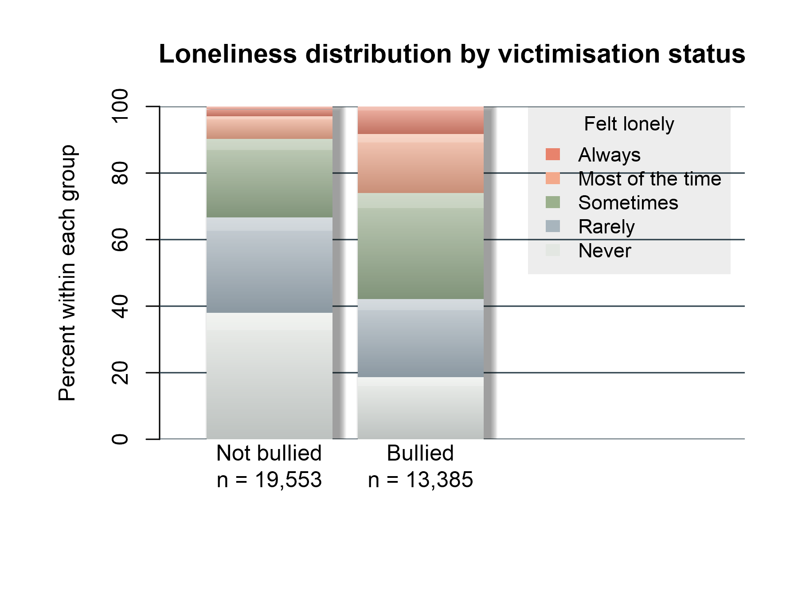
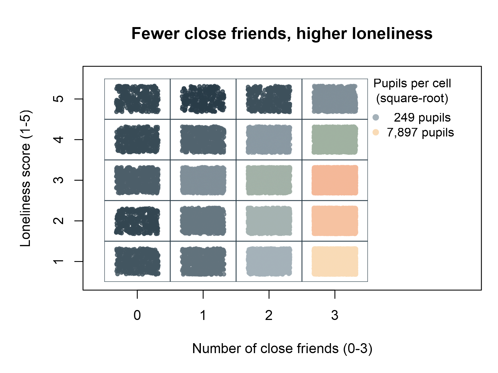
Bullying was widespread, but it was not evenly distributed across pupils or settings.
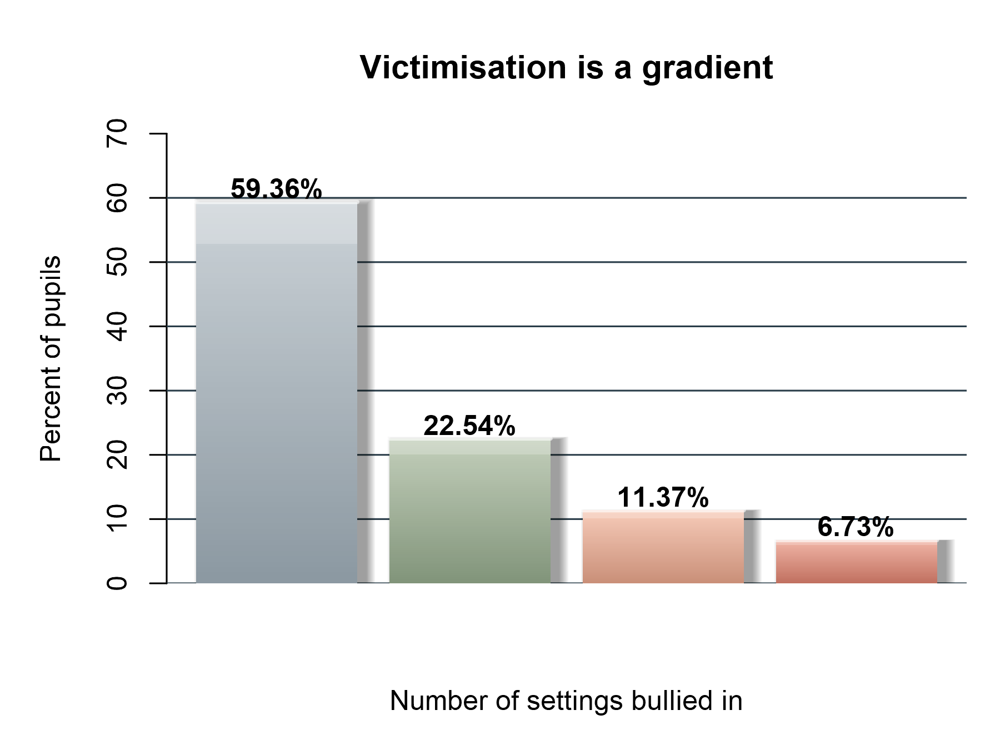
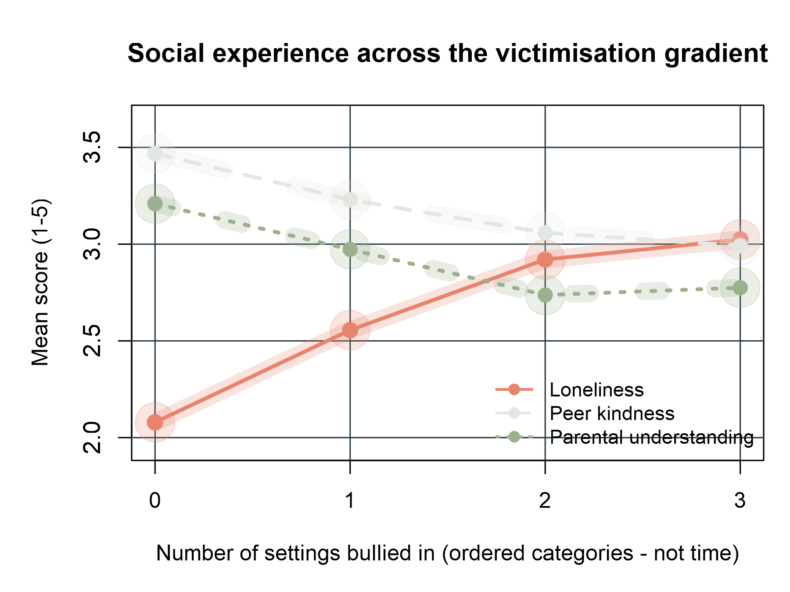
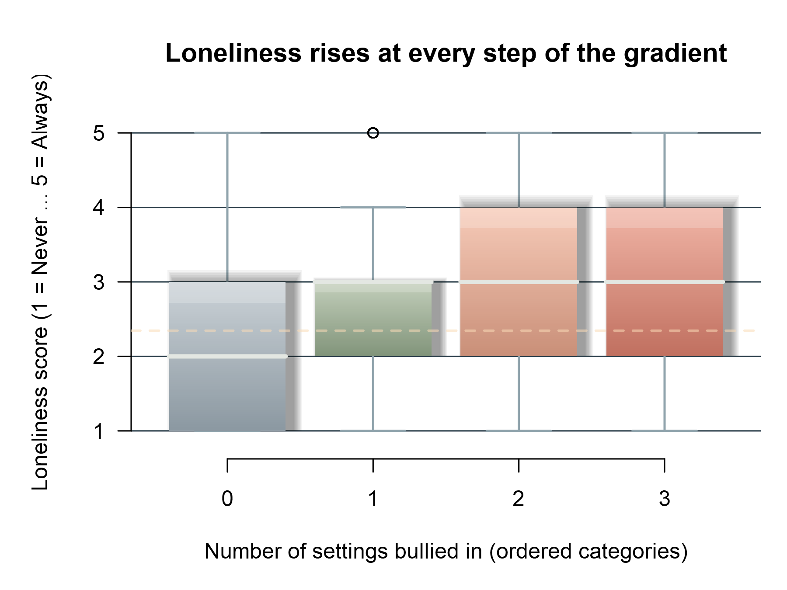
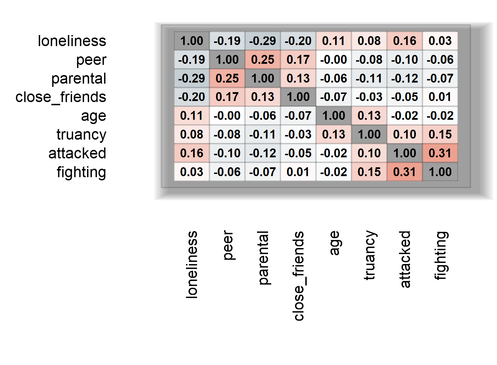
Spearman correlations: largest
ρ = 0.307, loneliness vs parental understanding −0.291. Significant here, but weak.
| Score | Mean | Med | Mode | SD | Var | Rng | IQR | Q1 | Q3 | CV% |
|---|---|---|---|---|---|---|---|---|---|---|
| Loneliness | 2.346 | 2 | 1 | 1.167 | 1.361 | 4 | 2 | 1 | 3 | - |
| Peer kindness | 3.335 | 3 | 4 | 1.179 | 1.390 | 4 | 2 | 2 | 4 | - |
| Parental | 3.073 | 3 | 5 | 1.469 | 2.158 | 4 | 2 | 2 | 4 | - |
| Close friends | 2.508 | 3 | 3 | 0.856 | 0.732 | 3 | 1 | 2 | 3 | 34.1 |
| Age band | 5.048 | 5 | 6 | 1.351 | 1.825 | 7 | 2 | 4 | 6 | - |
| Truancy | 0.476 | 0 | 0 | 0.906 | 0.821 | 4 | 1 | 0 | 1 | 190.5 |
| Attacked | 0.341 | 0 | 0 | 1.032 | 1.065 | 7 | 0 | 0 | 0 | 302.9 |
| Fighting | 0.460 | 0 | 0 | 1.151 | 1.324 | 7 | 0 | 0 | 0 | 250.0 |
| Bully index | 0.655 | 0 | 0 | 0.926 | 0.857 | 3 | 1 | 0 | 1 | 141.4 |
Q1 and Q3 are the 25th and 75th percentiles, CV is blank where no true zero exists.
Ten tests at α = 0.05, with the Bonferroni threshold 0.005 beside every p-value. Effect size is read first: at n = 32,938 standard errors are tiny, so a p-value near zero is close to automatic and says little about strength.
What the scores look like before testing. The rank tests are not a preference, the distributions require them.
| Score | Mean | SD | Med. | Skew. | Kurt. |
|---|---|---|---|---|---|
| Loneliness (1-5) | 2.346 | 1.167 | 2 | +0.50 | −0.62 |
| Attacked (0-7) | 0.341 | 1.032 | 0 | +4.44 | +22.64 |
| Fighting (0-7) | 0.460 | 1.151 | 0 | +3.66 | +15.47 |
| Peer kindness (1-5) | 3.335 | 1.179 | 3 | −0.27 | −0.84 |
| Close friends (0-3) | 2.508 | 0.856 | 3 | −1.69 | +1.81 |
Attacked and fighting spike at zero with heavy tails, so a mean is dragged by that spike, ranks are not.
The ten tests. Every one carries its effect size, read before the p-value.
| Test | Statistic | p | Effect size | Decision |
|---|---|---|---|---|
| Sex | 382.04 (df 1) | <1e-16 | V = 0.108 small | reject H₀ |
| Body weight (3 flags) | 0.05/ | .824/ | V ≤ 0.003 negli. | fail to reject |
| Loneliness × bullied | U = 1.717e8 | <1e-16 | d = 0.585 med. | reject H₀ |
| Loneliness × severity | H = 2823.7 (df 3) | <1e-16 | η² = 0.0856 | reject H₀ |
| Score pairs | ρ −0.291 to +0.307 | <1e-16 | weak throughout | reject H₀ |
Sex and body weight are χ², loneliness by group is Mann-Whitney and Kruskal-Wallis, score pairs are Spearman.
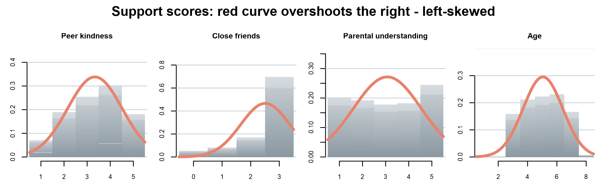
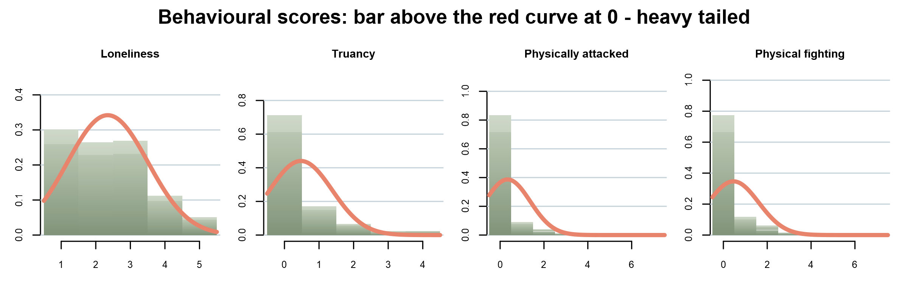
Two pupils in five, precise to half a percentage point. The interval is narrow because n is large, not because the rate is high.
Mean 2.346, SD 1.167. The average pupil sits between “Rarely” and “Sometimes”.
The test follows the measurement scale. Nominal × nominal → chi-square.
One ordinal score across two groups → Mann-Whitney,
across four ordered groups → Kruskal-Wallis.
Two ordinal scores → Spearman.
A multiple logistic regression predicts any_bullying from six experiences, benchmarked against a pruned decision tree. Least squares cannot be used: a binary response lets it predict probabilities outside 0-1.
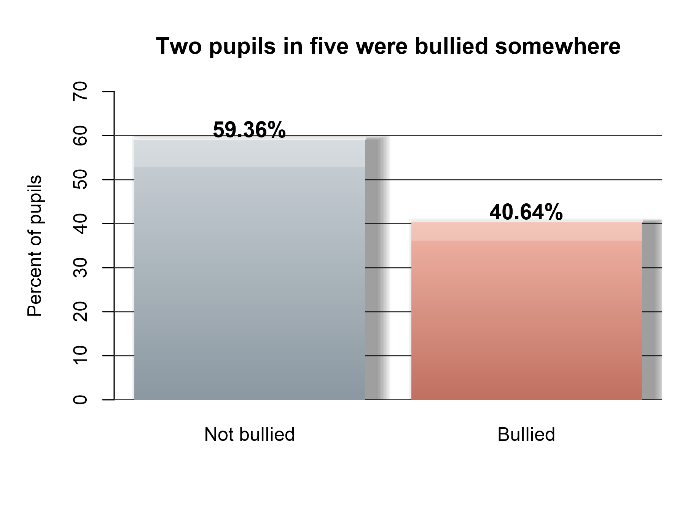
| Metric | Baseline | Model |
|---|---|---|
| Accuracy | 0.5936 | 0.6554 |
| Sensitivity | 0.0000 | 0.3994 |
| Specificity | 1.0000 | 0.8307 |
| AUC-ROC | 0.5000 | 0.6788 |
| Brier score | - | 0.2187 |
| McFadden / Nagelkerke R² | - | 0.069 / 0.121 |
Why logistic regression? The outcome is binary, and least squares can return a predicted risk
outside 0-1. Logistic regression instead models the log-odds, so every fitted probability stays in
range, coefficients come from maximum likelihood.
| Predictor | Odds ratio | 95% CI | Reading |
|---|---|---|---|
| Loneliness | 1.594 | 1.554-1.636 | odds ×1.59 per step |
| Peer support | 0.863 | 0.842-0.884 | odds ×0.86 per step |
| Fighting | 1.150 | 1.122-1.178 | odds ×1.15 per step |
| Truancy | 1.104 | 1.071-1.139 | odds ×1.10 per band |
| Parental support | 0.982 | 0.963-1.002 | CI includes 1 - no effect |
| Close friends | 1.006 | 0.974-1.040 | CI includes 1 - no effect |
Confounding, not a contradiction of Task 3. Fitted alone, parental support (OR 0.854) and close friendships (0.858) looked protective, with loneliness held constant both collapse to 0.982 and 1.006, because the three are themselves correlated (ρ = −0.291).
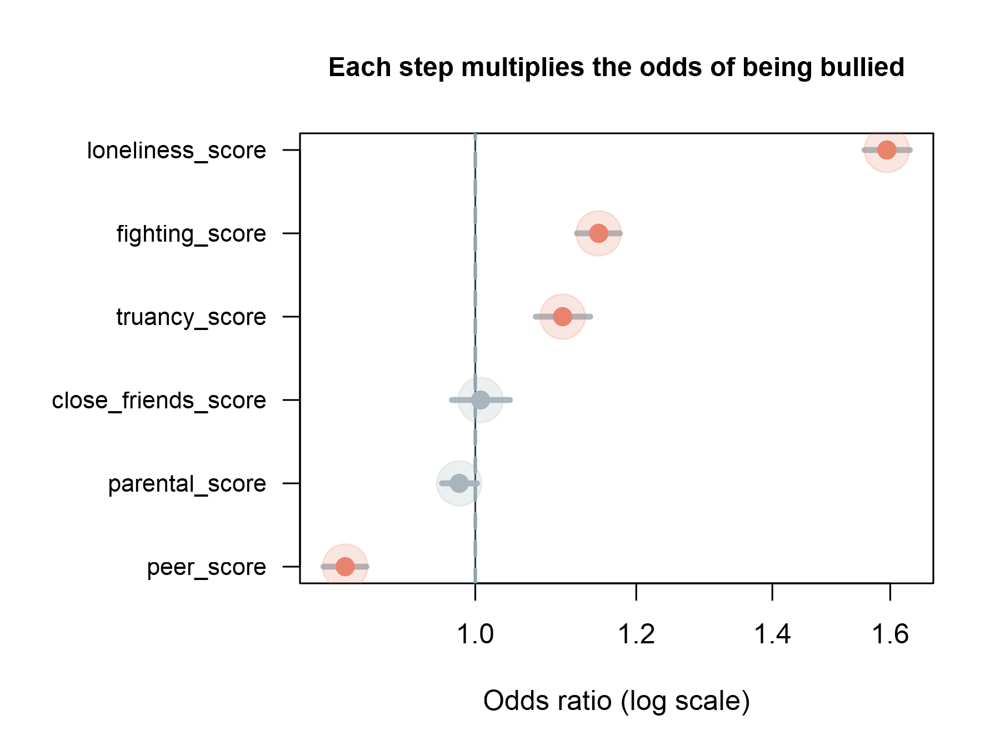
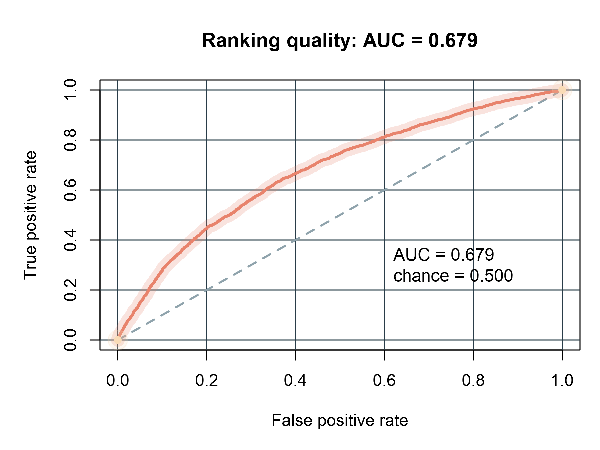
Four written rules fixed feature selection: bar the outcome’s own components and the collapsed twins, bar Physically_attacked as a sibling measure, screen the rest, dropping age and body-weight flags (V ≤ 0.013). Sex is a control only - it moves no coefficient by more than 0.050.
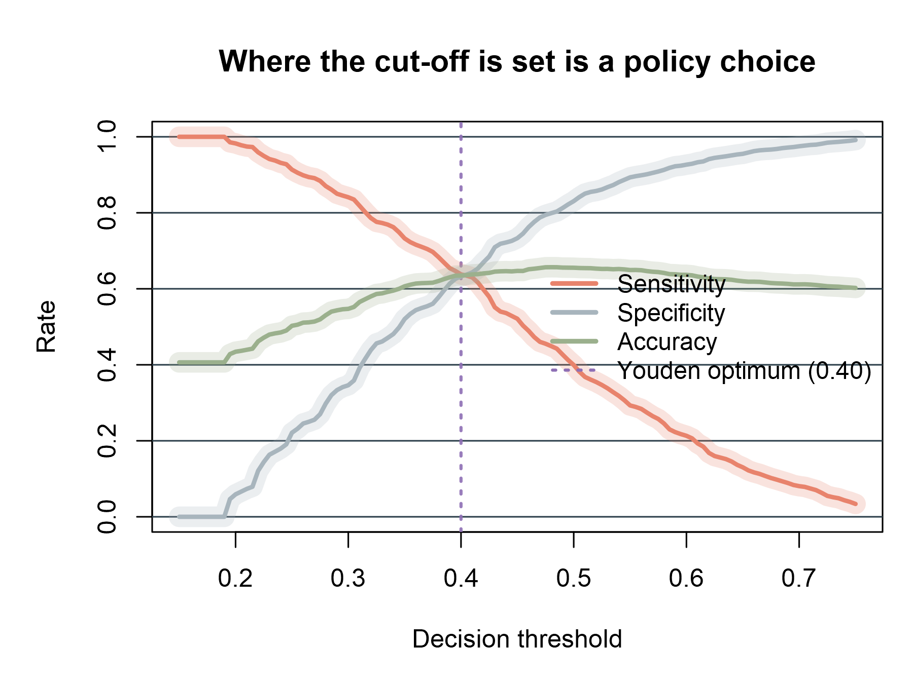
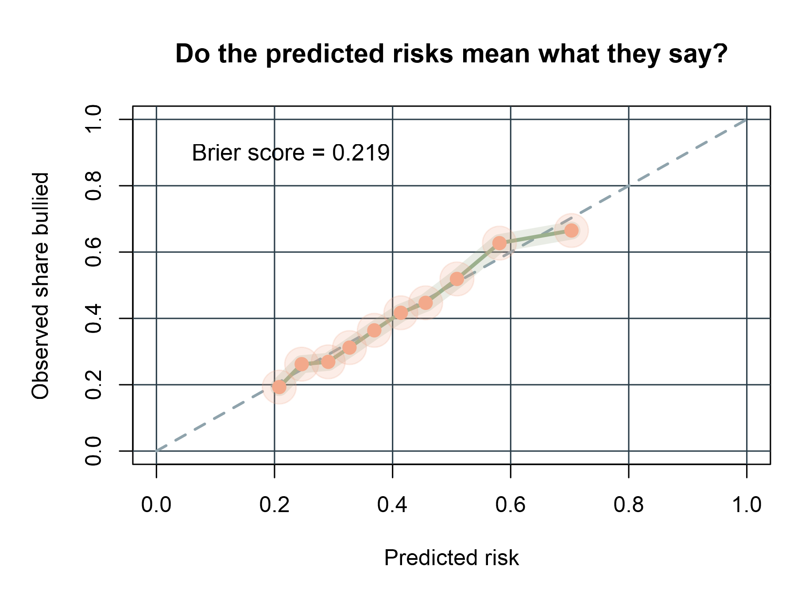
A model that predicts “not bullied” for every pupil achieves 59.36% accuracy but misses all victims. However, lowering the prediction threshold from 0.50 to 0.40 increases victim detection from 39.9% to 63.8%, with only a small drop in accuracy. The maximum calibration gap is 0.046, suggesting that the predicted risks are reasonably close to the actual rates.
Therefore, the model can help schools identify pupils who may need support. For example, the top 30% of predicted risks includes 44.6% of all victims, while the top 20% includes 31.8%. However, these predictions should guide further support, not be used alone to label pupils.
Limitations. Self-reported, cross-sectional data show associations.